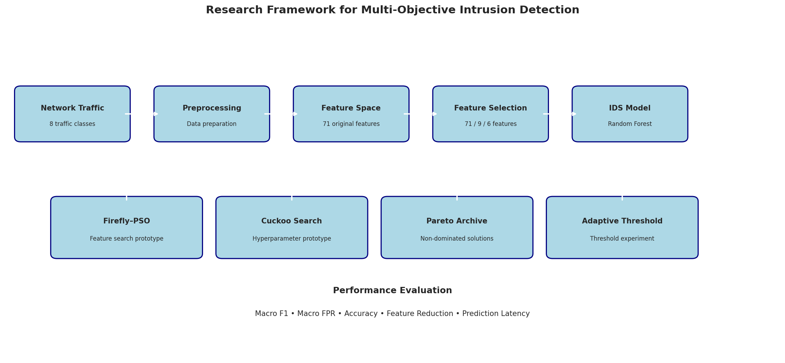

Industrial IoT security · CIC-IIoT-2025
Multi-objective feature selection using hybrid global-local optimization. A compact Random Forest IDS that keeps 95.8% macro F1 with only 9 of 71 features, evaluated on a leakage-safe held-out test set.
All headline numbers are Actual results printed by the notebook (Step 6.55, final held-out test consolidation).
Industrial IoT networks need intrusion detection that is accurate, cheap to run and has few false alarms. Full-feature models are accurate but expensive to compute and harder to deploy on constrained hardware.
This project searches for the smallest feature subset that keeps detection performance high, balancing three objectives at once:
Source: Notebook Phase 4, Steps 4.4-4.5
A leakage-safe pipeline followed by hybrid global-local optimization.
8 classes: benign, bruteforce, ddos, dos, malware, mitm, recon, web
Drop label / ID / timestamp columns, remove duplicates and conflicting labels, group-aware splits
Multi-objective feature selection with a non-dominated Pareto archive
Importance-guided iterative reduction: 71 → 11 → 9 → 6 features
Random Forest (100 trees, balanced class weights), evaluated on the held-out test set
Hybrid swarm search over feature masks with a bounded Pareto archive.
Levy-flight search over Random Forest hyperparameters.
Dominance checks, fast non-dominated sorting, crowding distance.
Class-specific decision thresholds tuned on a separate calibration split.

109,771 samples never seen during feature selection or tuning. Actual · Notebook Step 6.55
Source: Notebook Step 6.43. Rows = true label, columns = predicted.
Of 53,680 attack samples in the test set.
Source: Notebook Step 6.20
All pairwise differences between RF_71, RF_9 and RF_6 are significant: 6/6 bootstrap 95% CIs exclude zero and 3/3 McNemar tests are significant at 0.05 after Holm correction. Actual
Interpretation: the full model is measurably better, but RF_9 gives up only ~1.3 macro-F1 points while using 87% fewer features and training ~27% faster. That is the trade-off the method is designed to expose.
Feature selection rerun with five random seeds on validation data. Actual · Notebook Steps 6.49-6.51
4 of 5 seeds recover exactly the RF_9 subset (Jaccard = 1.0).
Small-scale smoke tests (20,000 training / 5,000 validation samples, few iterations) on a fresh 70/15/15 split. Preliminary These validate the algorithms, not final performance.
8 particles, 2 iterations, 24 unique evaluations, 11 archived solutions. Notebook Step 6.65
6 nests, 2 iterations, 22 evaluations on RF_9 features. Notebook Step 6.66
On the independent assessment split, adaptive thresholds gave no meaningful gain over default argmax (macro F1 0.8952 vs 0.8963). The calibration-split improvement did not generalize. Notebook Step 6.67
main-h-mooa.ipynb on Kaggle (Python 3.12, Tesla T4) or in Jupyter./kaggle/input/datasets/muhammadirfangull/cic-iiot-2025/combined_dataset.csv/kaggle/working/ (models, metric tables, figures and a reproducibility ZIP).pip install numpy pandas scikit-learn scipy \
matplotlib seaborn joblib tensorflow shap lime
git clone https://github.com/dhanashreehodage-developer/h-mooa
jupyter notebook h-mooa/main-h-mooa.ipynbActual final measured results copied from saved notebook outputs. Preliminary small smoke-test runs of the H-MOOA components. No values on this page are estimated or simulated. Classification is offline (batch CSV), not a deployed real-time IDS.